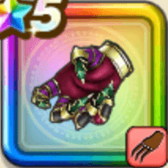

幻魔王のツメ
攻略班 8.5点 / あやしいひとみごうかいなきりさきおぞましいおたけびしゃくねつ邪なる封印
くわしい特徴
【レベル別習得スキル】 Lv1【ニンジャ】攻撃力+5 Lv10あやしいひとみ（消費MP：10）敵1体を眠りにさそう Lv15ごうかいなきりさき（消費MP：15）敵1体にメタル系なら+23ダメージを2回与え、それ以外には190%の体技ダメージを2回与える Lv20おぞましいおたけび（消費MP：28）敵全体にガードやみかわしされない威力380%の体技ダメージを与え、まれに怯え状態にする Lv30しゃくねつ（消費MP：49）敵全体にメラ属性のブレス特大ダメージを与える Lv35ドラゴン系へのダメージ+5% Lv40物質系へのダメージ+5% Lv45攻撃力+12 Lv50邪なる封印（消費MP：14）戦闘開始時に2ターンの間、敵全体のブレスを封じ、さらに呪文を封じる 【限界突破スキル】 1凸スキルの斬撃・体技・ブレスダメージ+7% 2凸スキルの斬撃・体技・ブレスダメージ+7% 3凸スキルの斬撃・体技・ブレスダメージ+7% 4凸スキルの斬撃・体技・ブレスダメージ+7%